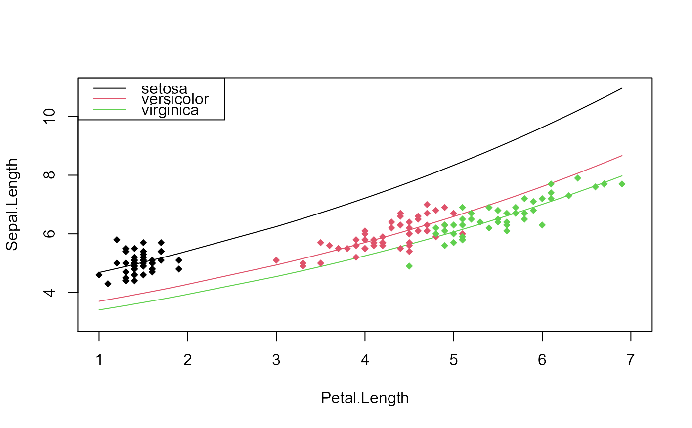

A fixest object. Obtained using the functions femlm, feols or feglm.
A data.frame containing the variables used to make the prediction. If not provided, the fitted expected (or linear if type = "link") predictors are returned.
Character either equal to "response" (default) or "link". If type="response", then the output is at the level of the response variable, i.e. it is the expected predictor \(E(Y|X)\). If "link", then the output is at the level of the explanatory variables, i.e. the linear predictor \(X\cdot \beta\).
Logical, default is FALSE. If TRUE, the standard-error of the predicted value is computed and returned in a column named se.fit. This feature is only available for OLS models not containing fixed-effects.
Either "none" (default), "confidence" or "prediction". What type of confidence interval to compute. Note that this feature is only available for OLS models not containing fixed-effects (GLM/ML models are not covered).
A numeric scalar in between 0.5 and 1, defaults to 0.95. Only used when the argument 'interval' is requested, it corresponds to the width of the confidence interval.
Logical scalar, default is FALSE. If TRUE, a data.frame is returned, with each column representing the fixed-effects coefficients for each observation in newdata -- with as many columns as fixed-effects. Note that when there are variables with varying slopes, the slope coefficients are returned (i.e. they are not multiplied by the variable).
Logical scalar, default is FALSE. Only used when fixef = TRUE and when variables with varying slopes are present. If TRUE, the coefficients of the variables with varying slopes are returned instead of the coefficient multiplied by the value of the variables (default).
Either "estimation" (default) or "original". This argument is only used when arg. 'newdata' is missing, and is ignored otherwise. If equal to "estimation", the vector returned matches the sample used for the estimation. If equal to "original", it matches the original data set (the observations not used for the estimation being filled with NAs).
Versatile argument to specify the VCOV. In general, it is either a character scalar equal to a VCOV type, either a formula of the form: vcov_type ~ variables. The VCOV types implemented are: "iid", "hetero" (or "HC1"), "cluster", "twoway", "NW" (or "newey_west"), "DK" (or "driscoll_kraay"), and "conley". It also accepts object from vcov_cluster, vcov_NW, NW, vcov_DK, DK, vcov_conley and conley. It also accepts covariance matrices computed externally. Finally it accepts functions to compute the covariances. See the `vcov` documentation in the vignette.
An object of class ssc.type obtained with the function ssc. Represents how the degree of freedom correction should be done.You must use the function ssc for this argument. The arguments and defaults of the function ssc are: adj = TRUE, fixef.K="nested", cluster.adj = TRUE, cluster.df = "min", t.df = "min", fixef.force_exact=FALSE). See the help of the function ssc for details.
Not currently used.
It returns a numeric vector of length equal to the number of observations in argument newdata.
If newdata is missing, it returns a vector of the same length as the estimation sample, except if sample = "original", in which case the length of the vector will match the one of the original data set (which can, but also cannot, be the estimation sample).
If fixef = TRUE, a data.frame is returned.
If se.fit = TRUE or interval != "none", the object returned is a data.frame with the following columns: fit, se.fit, and, if CIs are requested, ci_low and ci_high.
See also the main estimation functions femlm, feols or feglm. update.fixest, summary.fixest, vcov.fixest, fixef.fixest.
# Estimation on iris data
res = fepois(Sepal.Length ~ Petal.Length | Species, iris)
# what would be the prediction if the data was all setosa?
newdata = data.frame(Petal.Length = iris$Petal.Length, Species = "setosa")
pred_setosa = predict(res, newdata = newdata)
# Let's look at it graphically
plot(c(1, 7), c(3, 11), type = "n", xlab = "Petal.Length",
ylab = "Sepal.Length")
newdata = iris[order(iris$Petal.Length), ]
newdata$Species = "setosa"
lines(newdata$Petal.Length, predict(res, newdata))
# versicolor
newdata$Species = "versicolor"
lines(newdata$Petal.Length, predict(res, newdata), col=2)
# virginica
newdata$Species = "virginica"
lines(newdata$Petal.Length, predict(res, newdata), col=3)
# The original data
points(iris$Petal.Length, iris$Sepal.Length, col = iris$Species, pch = 18)
legend("topleft", lty = 1, col = 1:3, legend = levels(iris$Species))

#
# Getting the fixed-effect coefficients for each obs.
#
data(trade)
est_trade = fepois(Euros ~ log(dist_km) | Destination^Product +
Origin^Product + Year, trade)
obs_fe = predict(est_trade, fixef = TRUE)
head(obs_fe)
#> Destination^Product Origin^Product Year
#> 1 22.69941 0.000000 0
#> 2 26.17685 -2.470634 0
#> 3 25.41261 0.000000 0
#> 4 27.60928 -4.672485 0
#> 5 24.43620 0.000000 0
#> 6 26.67832 -4.451350 0
# can we check we get the right sum of fixed-effects
head(cbind(rowSums(obs_fe), est_trade$sumFE))
#> [,1] [,2]
#> [1,] 22.69941 22.69941
#> [2,] 23.70622 23.70622
#> [3,] 25.41261 25.41261
#> [4,] 22.93679 22.93679
#> [5,] 24.43620 24.43620
#> [6,] 22.22697 22.22697
#
# Standard-error of the prediction
#
base = setNames(iris, c("y", "x1", "x2", "x3", "species"))
est = feols(y ~ x1 + species, base)
head(predict(est, se.fit = TRUE))
#> fit se.fit
#> 1 5.063856 0.06240784
#> 2 4.662076 0.07686065
#> 3 4.822788 0.06651280
#> 4 4.742432 0.07108218
#> 5 5.144212 0.06458060
#> 6 5.385281 0.07972048
# regular confidence interval
head(predict(est, interval = "conf"))
#> fit se.fit ci_low ci_high
#> 1 5.063856 0.06240784 4.940517 5.187196
#> 2 4.662076 0.07686065 4.510173 4.813979
#> 3 4.822788 0.06651280 4.691336 4.954240
#> 4 4.742432 0.07108218 4.601949 4.882915
#> 5 5.144212 0.06458060 5.016579 5.271846
#> 6 5.385281 0.07972048 5.227726 5.542836
# adding the residual to the CI
head(predict(est, interval = "predi"))
#> fit se.fit ci_low ci_high
#> 1 5.063856 0.06240784 4.189559 5.938154
#> 2 4.662076 0.07686065 3.783294 5.540858
#> 3 4.822788 0.06651280 3.947310 5.698267
#> 4 4.742432 0.07108218 3.865552 5.619312
#> 5 5.144212 0.06458060 4.269299 6.019126
#> 6 5.385281 0.07972048 4.505504 6.265057
# You can change the type of SE on the fly
head(predict(est, interval = "conf", vcov = ~species))
#> fit se.fit ci_low ci_high
#> 1 5.063856 0.005175705 5.041587 5.086126
#> 2 4.662076 0.030766691 4.529698 4.794454
#> 3 4.822788 0.016389733 4.752269 4.893307
#> 4 4.742432 0.023578212 4.640983 4.843881
#> 5 5.144212 0.012364184 5.091014 5.197411
#> 6 5.385281 0.033929622 5.239293 5.531268